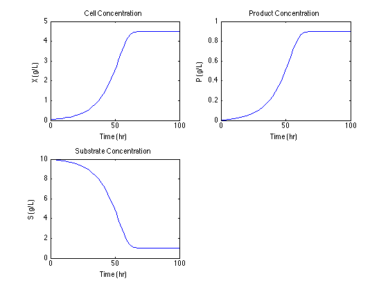
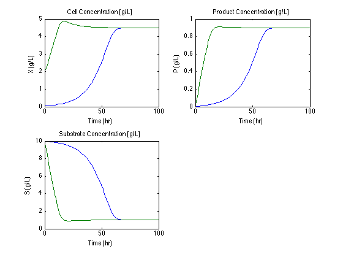
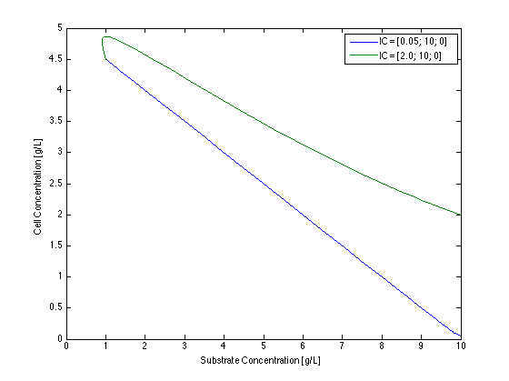
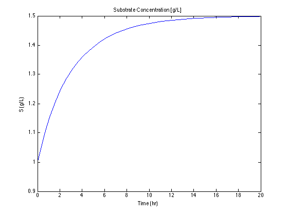
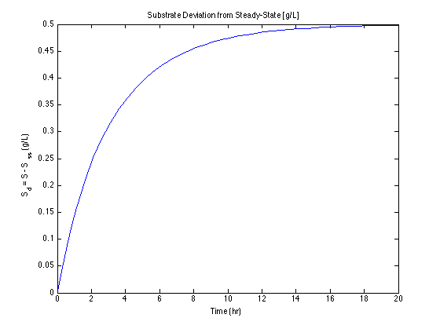
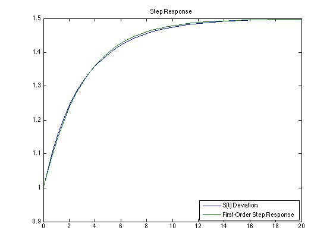
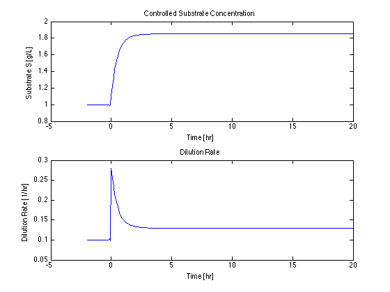
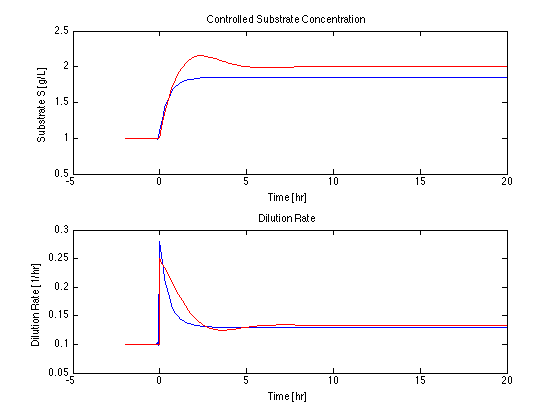

Project 1. Modeling and Simulation of a Continuous Bioreactor
The following example is a Matlab implementation of a model for a continuous bioreactor based on problem 2.15 of SEMD. Use the Matlab 'publish' command to view the results. This script requires displaytable and addplot from the CBE30338 matlab utilities folder.
Contents
Version History
2012/02/05 -- Original Version, Jeff Kantor 2012/02/06 -- Added PI simulation.
Process Description
Operation of the continuous bioreactor begins with an initial batch of cells. A growth substrate is added to the reactor at a programmed rate F(t) over the period of operation. Substrate is consumed and a desired product produced during the course of normal cell growth and metabolism.
_____
Substrate ---- |Mixer|
F, Sf | \___/
___|__________|______________
| | |
| V: Volume | P: Product |------------->
| S: Substrate | X: Cells | Product
| _ | _ | X,S,P
| |_|-|_| |
|_____________________________|Parameter values for the fed-batch bioreactor are from Table 2.3 of SEMD.
MATLAB PARAMETER DESCRIPTION VALUE UNITS
mumax mu_{max} Maximum Growth Rate 0.20 1/hour
Ks K_s Monod Constant 1.00 g/liter
Yxs Y_{X/S} Cell yield 0.5 g/g
Ypx Y_{P/X} Product yield 0.2 g/g
Sf S_f Feed Substrate Conc 10.0 g/litermumax = 0.20; Ks = 1.00; Yxs = 0.5; Ypx = 0.2; Sf = 10.0;
Rate equations for cell growth are implemented using anonymous functions. The following lines implement the rate models given by equations (2-93) through (2-95) in SEMD.
mu = @(S) mumax*S./(Ks + S); % Monod Equation (2-94) rg = @(X,S) mu(S)*X; % Rate of cell growth (2-93) rp = @(X,S) Ypx*rg(X,S); % Rate of product formation (2-95)
PART 1. Model for the Continuous Bioreactor
Convert the model of the fed-batch bioreactor to a continuous bioreactor operating at constant volume. The inlet flowrate is F (volumetric units, not mass as mistakenly indicated in the problem), and is equal to the outlet flowrate. The volume is fixed. In your model, F and V will appear as the ratio F/V which is called the dilution rate and represented by the symbol D.
--------- SOLUTION ---------
Simulating systems of differential equations in Matlab requires all of the variables to be included in a single Matlab vector. The following table shows how the model variables are mapped to the Matlab vector x for simulation.
MATLAB SYMBOL DESCRIPTION IC UNITS x(1) X Cell Conc. 0.05 g/liter x(2) S Substrate Conc. 10.0 g/liter x(3) P Product Conc. 0.0 g/liter
ic = [0.05; 10.0; 0.0];
The dilution rate is the ratio of volumetric flowrate to reactor volume, that is F/V with units 1/hour.
D = @(t) 0.1;
The differential equations given in SEMD for the fed-batch bioreactor model the rate of change for total cell mass, product mass, substrate mass, and volume. These equations are modified for the case of constant volume, and an exit flow.
dX = @(t,x) -D(t)*x(1) + rg(x(1),x(2)); dS = @(t,x) D(t)*(Sf-x(2)) - rg(x(1),x(2))/Yxs; dP = @(t,x) -D(t)*x(3) + rp(x(1),x(2));
The right hand sides of the differential equations are assembled into a corresponding function that produces a vector of function values.
f = @(t,x) [dX(t,x); dS(t,x); dP(t,x)];
Use ode45 for the integration.
tspan = [0 100]; [t,x] = ode45(f,tspan,ic);
Display
subplot(2,2,1); plot(t,x(:,1)); xlabel('Time (hr)'); ylabel('X (g/L)'); title('Cell Concentration'); subplot(2,2,2); plot(t,x(:,3)); xlabel('Time (hr)'); ylabel('P (g/L)'); title('Product Concentration'); subplot(2,2,3); plot(t,x(:,2)); xlabel('Time (hr)'); ylabel('S (g/L)'); title('Substrate Concentration');
PART 2. Phase Plane
For a fixed value D = 0.1 (units = 1/hr), and all other parameters as given in Table 2.3, simulate the response of the bioreactor from an initial condition X(0) = 0.05; S(0) = 10; P(0) = 0. Repeat the simulation for an initial condition X(0) = 2.0. What is the major difference in these results? Construct a plot of the two simulations where X is plotted as a function of S.
--------- SOLUTION ---------
Having already established the model with D(t) = 0.1, all that needs to be done is to simulate the response for two different initial conditions.
ic1 = [0.05; 10; 0]; ic2 = [2.0; 10; 0]; [t1,x1] = ode45(f,tspan,ic1); [t2,x2] = ode45(f,tspan,ic2); clf; subplot(2,2,1); plot(t1,x1(:,1),t2,x2(:,1)); xlabel('Time (hr)'); ylabel('X (g/L)'); title('Cell Concentration [g/L]'); subplot(2,2,2); plot(t1,x1(:,3),t2,x2(:,3)); xlabel('Time (hr)'); ylabel('P (g/L)'); title('Product Concentration [g/L]'); subplot(2,2,3); plot(t1,x1(:,2),t2,x2(:,2)); xlabel('Time (hr)'); ylabel('S (g/L)'); title('Substrate Concentration [g/L]');
Plotting one state variable as function of another is called the phase plane. Phase plane analysis is particularly useful in studying the behavior of nonlinear systems.
clf; plot(x1(:,2),x1(:,1),x2(:,2),x2(:,1)); xlabel('Substrate Concentration [g/L]'); ylabel('Cell Concentration [g/L]'); legend('IC = [0.05; 10; 0]','IC = [2.0; 10; 0]');
PART 3. Step Testing
Choose the initial conditions so that the process starts at steady state with D = 0.1. Do a step test by increasing D to 0.12 at t = 0. Plot the step response of S(t). Find a transfer function that approximates this step response.
--------- SOLUTION ---------
The first task is to identify the steady state solution. We do this in two steps. First run the ode45 simulation for a while to get near a steady state, then pass that to fsolve as a starting point for finding precise values for the steady state solution.
[t,x] = ode45(f,[0 100],ic); xss = fsolve(@(x)f(0,x),x(end,:)'); displaytable(D(0),'Dilution Rate = '); displaytable(xss,{'X','S','P'},'Steady State');
Equation solved. fsolve completed because the vector of function values is near zero as measured by the default value of the function tolerance, and the problem appears regular as measured by the gradient. Dilution Rate = 0.1 Steady State X 4.5 S 1 P 0.9
A step change in D from 0.10 to 0.12 can be conveniently implemented in Matlab using anonymous functions.
D = @(t) (t<0)*0.10 + (t>=0)*0.12;
Because D(t) has changed, it is necessary to rebuilding the functions from the point of the change.
dX = @(t,x) -D(t)*x(1) + rg(x(1),x(2)); dS = @(t,x) D(t)*(Sf-x(2)) - rg(x(1),x(2))/Yxs; dP = @(t,x) -D(t)*x(3) + rp(x(1),x(2)); f = @(t,x) [dX(t,x); dS(t,x); dP(t,x)];
Simulation of the step response starting at the steady state.
[t,x] = ode45(f,[0 20],xss); plot(t,x(:,2)); xlabel('Time (hr)'); ylabel('S (g/L)'); title('Substrate Concentration [g/L]');
There are many ways to fit a transfer function. Here we start by expressing the step as a deviation from steady state.
Sd = x(:,2) - xss(2); clf; plot(t,Sd); xlabel('Time (hr)'); ylabel('S_d = S - S_{ss} (g/L)'); title('Substrate Deviation from Steady-State [g/L]');
The deviation in controlled variable is rescaled by dividing by the magnitude of the step in D. For a first order transfer function, the 'gain' is then the maximum value, and the time constant is the time necessary to acheive 0.6321 of the ultimate response.
Dd = max(D(t)) - 0.10; G = Sd./Dd; % The gain is the max K = max(G); [tmp,i] = min(abs(G-0.6321*K)); tau = t(i); Sdpred = xss(2) + K*(1-exp(-t/tau))*Dd; plot(t,x(:,2),t,Sdpred); legend('S(t) Deviation','First-Order Step Response','Location','SE'); title('Step Response'); displaytable(K, 'Gain [g*hr/liter] = '); displaytable(tau,'Tau [hr] = ');
Gain [g*hr/liter] = 24.916 Tau [hr] = 3.1164
PART 4. Proportional Control
Implement a proportional feedback control that measures substrate concentration S then adjusts D to maintain S at a setpoint near 2.0 grams/liter. Be sure to limit D so that it always positive (for example, using a max function such as in the expression D = @(t,x) max(0, 0.1+Kp*(Ssp -x(2)) ).
--------- SOLUTION ---------
The controller is implemented to determine a deviation for the dilution rate that is proportional to deviation of substrate concentration x(2) from the setpoint Sp. For clarity, we'll start the simulation a bit before time 0 in order to see how the substrate concentration and dilution rate changes with the setpoint change.
Sp = @(t) xss(2) + (2-xss(2))*(t >= 0); Kp = 0.2;
Proportional control, subject to constraint on non-negativity.
D = @(t,x) max(0, 0.1 + Kp*(Sp(t) - x(2)));
Renew the process model. Note that D is now a function of t and x.
dX = @(t,x) -D(t,x)*x(1) + rg(x(1),x(2)); dS = @(t,x) D(t,x)*(Sf-x(2)) - rg(x(1),x(2))/Yxs; dP = @(t,x) -D(t,x)*x(3) + rp(x(1),x(2)); f = @(t,x) [dX(t,x); dS(t,x); dP(t,x)]; [t,x] = ode45(f,[-2 20],xss); clf; subplot(2,1,1); plot(t,x(:,2)); xlabel('Time [hr]'); ylabel('Substrate S [g/L]'); title('Controlled Substrate Concentration'); subplot(2,1,2); plot(t, max(0, 0.1 + Kp*(Sp(t)-x(:,2)))); xlabel('Time [hr]'); ylabel('Dilution Rate [1/hr]'); title('Dilution Rate');
The dilution rate exhibits a sharp spike when the setpoint changes, and the substrate concentration never quite reaches the desired steady-state.
OPTIONAL. Proportional-Integral Control
Integral control adds a feature whereby the difference between a controlled variable and its setpoint is integrated and used to adjust the manipulated variable.
Kp = 0.15; Ki = 0.15;
Proportional-Integral control, subject to constraint on non-negativity.
D = @(t,x) max(0, 0.1 + Kp*(Sp(t) - x(2)) + Ki*x(4)); dX = @(t,x) -D(t,x)*x(1) + rg(x(1),x(2)); dS = @(t,x) D(t,x)*(Sf-x(2)) - rg(x(1),x(2))/Yxs; dP = @(t,x) -D(t,x)*x(3) + rp(x(1),x(2)); dI = @(t,x) Sp(t) - x(2); f = @(t,x) [dX(t,x); dS(t,x); dP(t,x); dI(t,x)]; [t,x] = ode45(f,[-2 20],[xss;0]); subplot(2,1,1); addplot(t,x(:,2),'r'); xlabel('Time [hr]'); ylabel('Substrate S [g/L]'); title('Controlled Substrate Concentration'); subplot(2,1,2); addplot(t, max(0, 0.1 + Kp*(Sp(t)-x(:,2))+Ki*x(:,4)),'r'); xlabel('Time [hr]'); ylabel('Dilution Rate [1/hr]'); title('Dilution Rate');
Compared to Proportional control, we see that Proportional-Integral control can be adjusted to eliminate steady-state offset from the desired setpoint, and reduce the overall range of dilution changes necessary for good control performance.